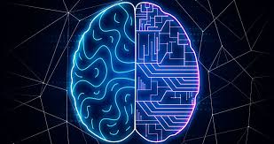
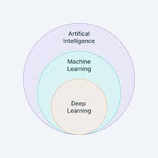
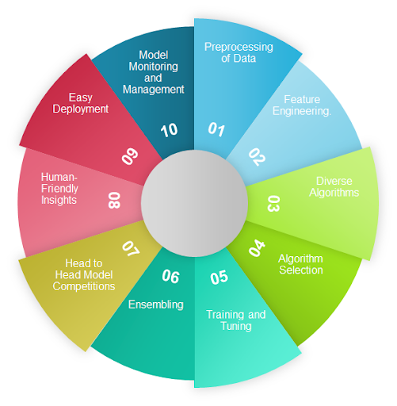

‣NeuralNexus

Machine Learning tutorial covers basic and advanced concepts, specially designed to cater to both students and experienced working professionals.
This machine learning tutorial helps you gain a solid introduction to the fundamentals of machine learning and explore a wide range of techniques, including supervised, unsupervised, and reinforcement learning.
Machine Learning is the field of study that gives computers the capability to learn without being explicitly programmed. ML is one of the most exciting technologies that one would have ever come across. As it is evident from the name, it gives the computer that makes it more similar to humans: The ability to learn. Machine learning is actively being used today, perhaps in many more places than one would expect.
‣What is Machine Learning?
Machine learning (ML) is a subdomain of artificial intelligence (AI) that focuses on developing systems that learn—or improve performance—based on the data they ingest. Artificial intelligence is a broad word that refers to systems or machines that resemble human intelligence. Machine learning and AI are frequently discussed together, and the terms are occasionally used interchangeably, although they do not signify the same thing. A crucial distinction is that, while all machine learning is AI, not all AI is machine learning.

‣Recent Articles on Machine Learning
‣Table of Content:
‣Features of Machine Learning
- Machine learning is data driven technology. Large amount of data generated by organizations on daily bases. So, by notable relationships in data, organizations makes better decisions.
- Machine can learn itself from past data and automatically improve.
- From the given dataset it detects various patterns on data.
- For the big organizations branding is important and it will become more easy to target relatable customer base.
- It is similar to data mining because it is also deals with the huge amount of data.

‣Types of Machine Learning
- Supervised Learning: The algorithm learns from labeled data and makes predictions on new, unseen data.
- Unsupervised Learning: The algorithm discovers patterns and structures in unlabeled data without explicit guidance.
- Semi-Supervised Learning: A combination of supervised and unsupervised learning, where the algorithm learns from a mix of labeled and unlabeled data.
- Reinforcement Learning: The algorithm learns through interaction with an environment, receiving rewards or penalties for its actions.
‣Applications of Machine Learning
- Image and Speech Recognition
- Natural Language Processing
- Recommendation Systems
- Fraud Detection
- Predictive Analytics
- Autonomous Systems
‣Machine Learning Algorithms
- Linear Regression
- Logistic Regression
- Decision Trees
- Random Forests
- Support Vector Machines (SVM)
- Neural Networks
- K-Means Clustering
‣Machine Learning Tools and Libraries
- Python Libraries (NumPy, Pandas, Scikit-learn, TensorFlow, Keras)
- R Libraries (caret, glmnet, randomForest, e1071)
- Machine Learning Frameworks (Apache Spark MLlib, H2O, Amazon SageMaker)
‣Machine Learning Workflow
- Data Collection and Preparation
- Feature Selection and Engineering
- Model Selection and Training
- Model Evaluation and Validation
- Model Deployment and Monitoring
‣Challenges and Considerations
- Data Quality and Preprocessing
- Overfitting and Underfitting
- Bias and Fairness
- Interpretability and Explainability
- Scalability and Performance
‣Future of Machine Learning
- Emerging Trends and Research Areas
- Advancements in Deep Learning
- Explainable AI (XAI)
- Federated Learning
- AutoML and MLOps
‣Resources and Further Reading
- Online Courses and Tutorials
- Books and Research Papers
- Machine Learning Communities and Forums
- Conferences and Events